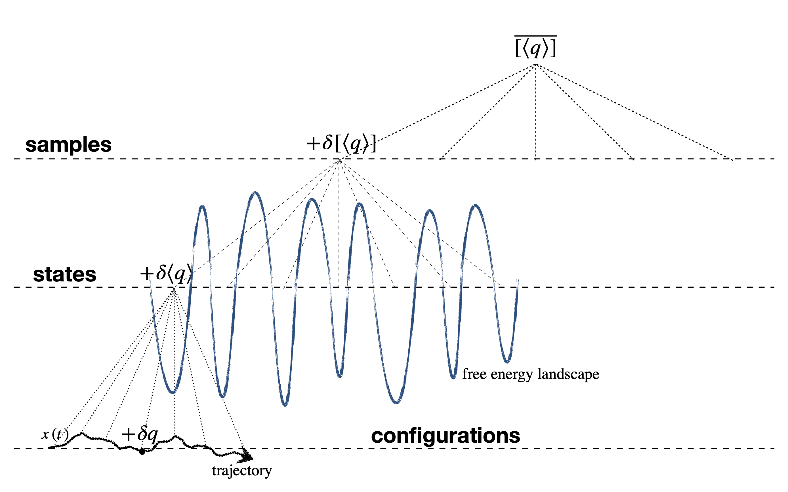

Heterogeneous fluctuations reveal how microscopic rearrangements appear inside coarse mean-field descriptions of glasses. This work combines replica calculations and numerical simulations to characterize non-Gaussian fluctuations near the glass transition and relate them to single-particle correlations.
